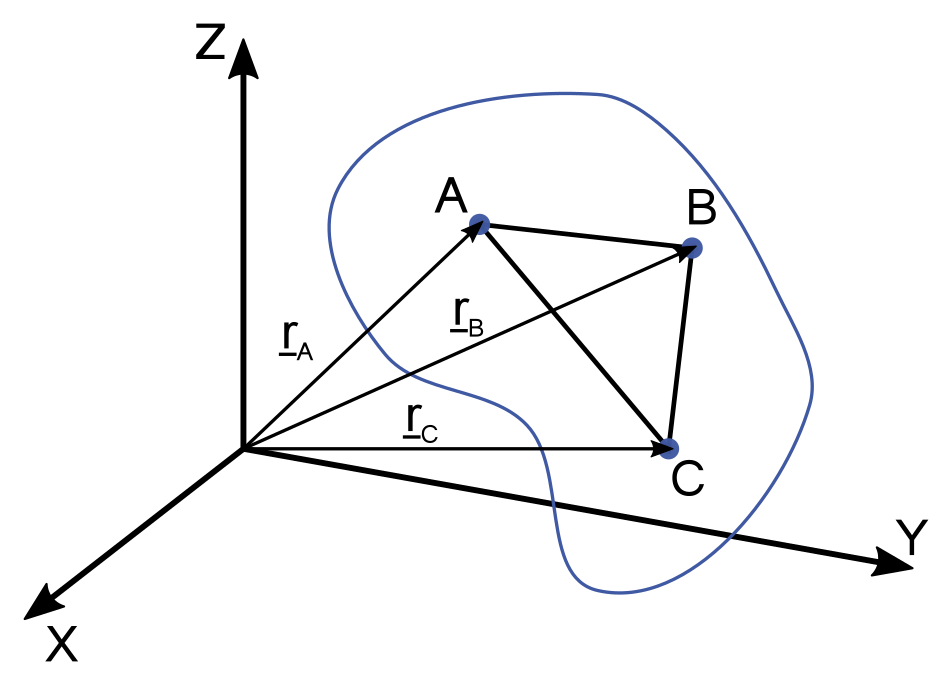
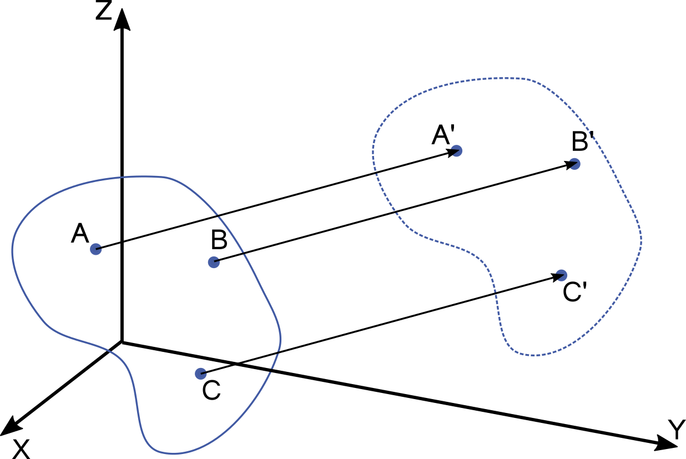
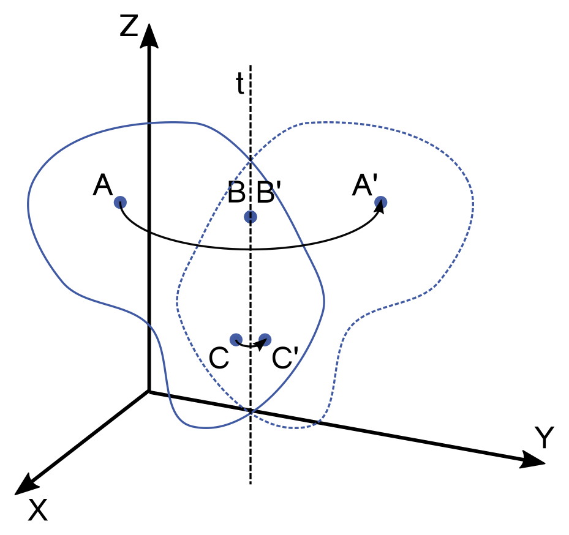
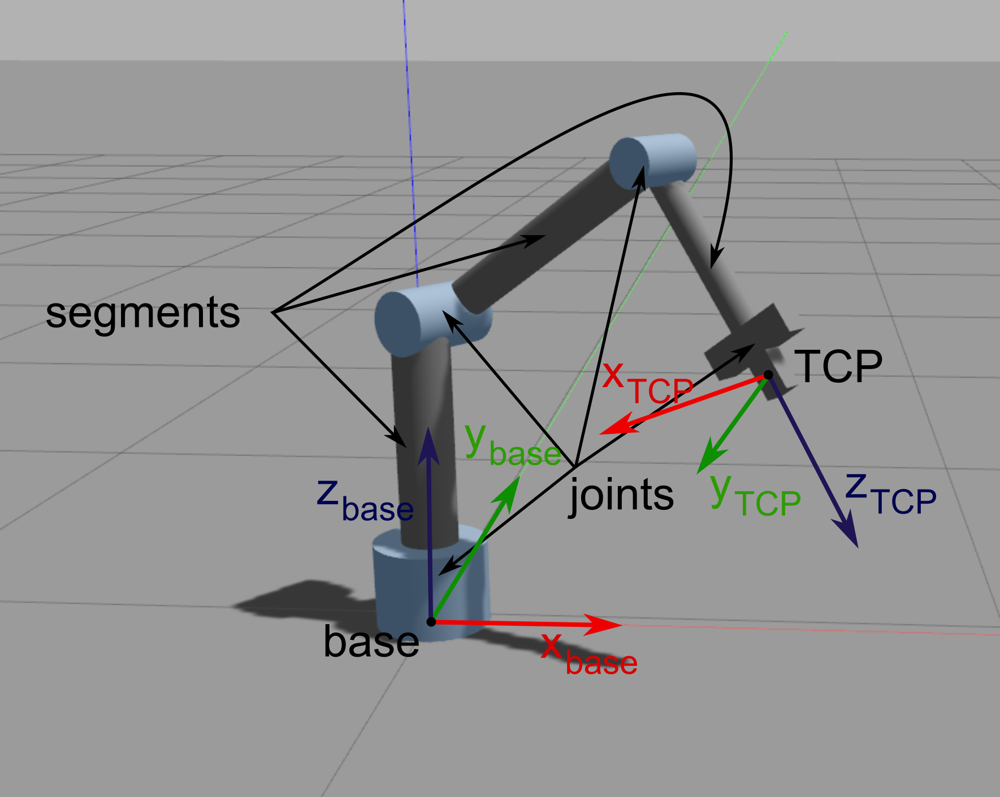
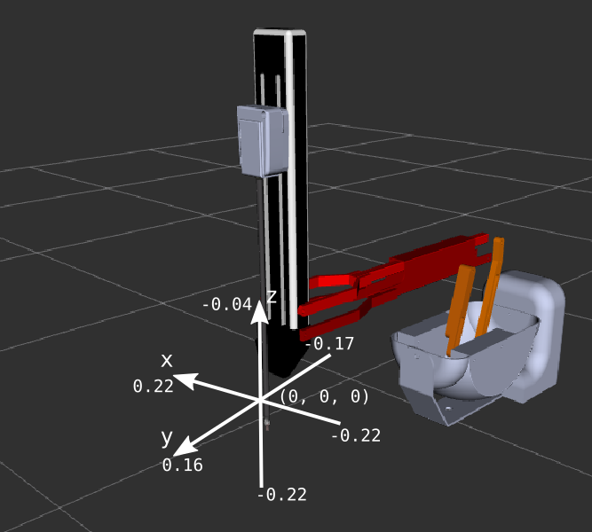
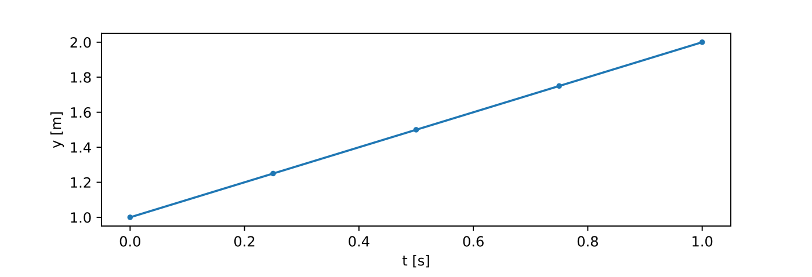

06. Principles of robotics, programming a da Vinci surgical robot in a simulated environment
Rigid body motion

Def. Rigid body
A rigid body is defined as a body on which the distance between two points remains constant in time regardless of the force applied on it.
- Shape and the volume of the rigid bodies are also constant.
- The pose of a rigid body can be given by the three coordinates of three of its points that do not lie on the same straight line.

-
The pose of a rigid body can be described in a more expressive way by the three coordinates of one of its points chosen arbitrarily position and the body's orientation.
-
The motion of rigid bodies is composed by two elemental motions: translation and rotation.
-
During translation, all points of the body move along straight, parallel lines.

-
During rotation, the position of the points of the rotational axis are constant, and the other points of the body move along circles in planes perpendicular to the axis of rotation.
-
The free motion of rigid bodies can always be expressed as the superposition of a translational motion and a rotation around a single axis.
3D transformations
- Position: 3D offset vector

-
Orientation: 3 x 3 rotation matrix
- further orientation representations: Euler-angles, RPY, angle axis, quaternion
-
Pose: 4 × 4 (homogenous) transformation matrix
- Frame: origin, 3 axes, 3 base vectors, right hand rule
- Homogenous transformation: rotation and translation in one transfromation
- e.g., for the rotation \(\mathbf{R}\) and translation \(\mathbf{v}\):
- Homogenous coordinates:
- Vector: extended with 0, \(\mathbf{a_H}=\left[\matrix{\mathbf{a} \\ 0}\right]=\left[\matrix{a_x \\ a_y \\ a_z \\ 0}\right]\)
- Point: extended by 1, \(\mathbf{p_H}=\left[\matrix{\mathbf{p} \\ 1}\right]=\left[\matrix{p_x \\ p_y \\ p_z \\ 1}\right]\)
- Applying transfomrations is much easier:
- Degrees of Freedom (DoF): the number of independent parameters.
Principles of robotics

- Robots are built of: segments (or links) és joints
- Task space (or cartesian space):
- 3D space around us, where the task, endpoint trajectories, obstacles are defined.
- TCP (Tool Center Point): Frame fixed to the end effector of the robot.
- Base frame, world frame
- Joint space:
- Properties or values regarding the joints.
- Low-level controller.
- Joint angles, joint velocities, accelerations, torques....
Python libraries
Numpy
- Python library
- High dimension arrays and matrices
- Mathematical functions
import numpy as np
# Creating ndarrays
a = np.zeros(3)
a.shape
a.shape=(3,1)
a = np.ones(5)
a = np.empty(10)
l = np.linspace(5, 10, 6)
r = np.array([1,2]) # ndarray from python list
r = np.array([[1,2],[3,4]])
type(r)
# Indexing
l[0]
l[0:2]
l[-1]
r[:,0]
# Operations on ndarrays
r_sin = np.sin(r)
np.max(r)
np.min(r)
np.sum(r)
np.mean(r)
np.std(r)
l < 7
l[l < 7]
np.where(l < 7)
p = np.linspace(1, 5, 6)
q = np.linspace(10, 14, 6)
s = p + q
s = p * q
s = p * 10
s = p + 10
s = p @ q # dot product
s = r.T
If not installed:
pip3 install numpy
Matplotlib
- Visualization in python
- Syntax similar to Matlab
import numpy as np
from matplotlib import pyplot as plt
X = np.linspace(-np.pi, np.pi, 256)
C, S = np.cos(X), np.sin(X)
plt.plot(X, C)
plt.plot(X, S)
plt.show()
If not installed:
pip3 install matplotlib
Practice
1: dVRK ROS2 install

-
On Ubuntu 20.04 you will need the following packages:
sudo apt install python3-vcstool python3-colcon-common-extensions python3-pykdl libxml2-dev libraw1394-dev libncurses5-dev qtcreator swig sox espeak cmake-curses-gui cmake-qt-gui git subversion gfortran libcppunit-dev libqt5xmlpatterns5-dev libbluetooth-dev ros-foxy-joint-state-publisher* ros-foxy-xacro
-
Clone the dVRK ROS2 packages with
vcs, then build:cd ~/ros2_ws/src vcs import --input https://raw.githubusercontent.com/jhu-dvrk/dvrk_robot_ros2/main/dvrk.vcs --recursive cd ~/ros2_ws colcon build --symlink-install --cmake-args -DCMAKE_BUILD_TYPE=Release source ~/ros2_ws/install/setup.bash
-
Start the RViz simulation of PSM1 (Patient Side Manipulator). Do not forget to HOME on the dVRK console. Study the simulator operation using the learned prancs (
ros2 topic list,ros2 topic echoros2 run rqt_gui rqt_gui, etc.).# dVRK main console ros2 run dvrk_robot dvrk_console_json -j ~/ros2_ws/install/sawIntuitiveResearchKitAll/share/sawIntuitiveResearchKit/share/console/console-PSM1_KIN_SIMULATED.json# ROS 2 joint and robot state publishers ros2 launch dvrk_model dvrk_state_publisher.launch.py arm:=PSM1# RViz ros2 run rviz2 rviz2 -d ~/ros2_ws/install/dvrk_model/share/dvrk_model/rviz/PSM1.rvizros2 run rqt_gui rqt_guiFor URDF related errors
locale # check for UTF-8 sudo apt update && sudo apt install locales sudo locale-gen en_US en_US.UTF-8 sudo update-locale LC_ALL=en_US.UTF-8 LANG=en_US.UTF-8 export LANG=en_US.UTF-8 locale # verify settings
2: PSM subscriber
-
Create a new python source file named
psm_grasp.pyin~/ros2_ws/src/ros2_course/ros2_course. Specify the new entry point insetup.pyin the usual way.
-
Subscribe to topics that publish the TCP (Tool Center Point) position of the PSM and the angle of the jaws of the tweezers.
/PSM1/measured_cp /PSM1/jaw/measured_js
-
Build and run the node:
cd ~/ros2_ws colcon build --symlink-install ros2 run ros2_course psm_grasp
3. Moving PSM TCP along a linear trajectory
-
The PSM expects the desired TCP position and the angle closed by the jaws of the clamp in the topics below. Create publishers in
psm_grasp.pyfor these topics./PSM1/servo_cp /PSM1/jaw/servo_jp
-
Write a function that moves the TCP along a linear trajectory to the desired position. Send the pin to position (0.0, 0.05, -0.12), leave the orientation unchanged. The sampling time should be 0.01s. Using Matplotlib plot the planned trajectory x, y and z components of the projected trajectory as a function of time.
def move_tcp_to(self, target, v, dt):

-
Write a function to open and close the gripper, also using a linear trajectory.
def move_jaw_to(self, target, omega, dt):
4. Dummy marker
-
Create a new python source file named
dummy_marker.py. Specify the entry point insetup.pyin the usual way. Implement a python program that publishes a marker with position (-0.05, 0.08, -0.14) in topicdummy_target_marker. The value of theframe_idadd tag should bePSM1_psm_base_link. Copy the following code into the filedummy_marker.py:import rclpy from rclpy.node import Node from visualization_msgs.msg import Marker class DummyMarker(Node): def __init__(self, position): super().__init__('minimal_publisher') self.position = position self.publisher_ = self.create_publisher(Marker, 'dummy_target_marker', 10) timer_period = 0.1 # seconds self.timer = self.create_timer(timer_period, self.timer_callback) self.i = 0 i = 0 def timer_callback(self): marker = Marker() marker.header.frame_id = 'PSM1_psm_base_link' marker.header.stamp = self.get_clock().now().to_msg() marker.ns = "dvrk_viz" marker.id = self.i marker.type = Marker.SPHERE marker.action = Marker.MODIFY marker.pose.position.x = self.position[0] marker.pose.position.y = self.position[1] marker.pose.position.z = self.position[2] marker.pose.orientation.x = 0.0 marker.pose.orientation.y = 0.0 marker.pose.orientation.z = 0.0 marker.pose.orientation.w = 1.0 marker.scale.x = 0.008 marker.scale.y = 0.008 marker.scale.z = 0.008 marker.color.a = 1.0 # Don't forget to set the alpha! marker.color.r = 0.0 marker.color.g = 1.0 marker.color.b = 0.0; self.publisher_.publish(marker) self.i += 1 def main(args=None): rclpy.init(args=args) marker_publisher = DummyMarker([-0.05, 0.08, -0.12]) rclpy.spin(marker_publisher) # Destroy the node explicitly # (optional - otherwise it will be done automatically # when the garbage collector destroys the node object) marker_publisher.destroy_node() rclpy.shutdown() if __name__ == '__main__': main()
-
Run the node and display the marker in RViz.
5. Grasping the marker
-
Subscribe to the topic sending the marker position in
psm_grasp.py.
-
Modify
psm_grasp.pyto use the tweezers to grasp the generated marker.
!!! note The simulator used has a tendency for certain values to get "stuck", so it is a good idea to reset the lever at the beginning of the program using the following lines:
#Reset the arm
psm.move_tcp_to([0.0, 0.0, -0.12], 0.01, 0.01)
psm.move_jaw_to(0.0, 0.1, 0.01)